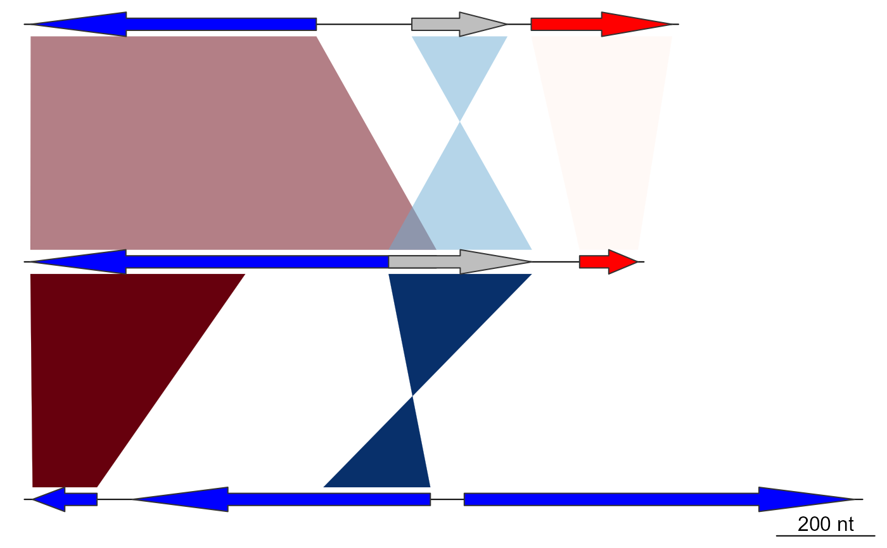

Generate a gradient color scheme
gradient_color_scheme.RdA color scale is generated based on a numeric vector, with the darker colors
corresponding to the higher values, or the lower values if
decreasing = TRUE.
Usage
gradient_color_scheme(
x,
direction = NULL,
color_scheme = "grey",
decreasing = FALSE,
rng = NULL,
alpha = 0.5,
transparency
)
apply_color_scheme(
x,
direction = NULL,
color_scheme = "grey",
decreasing = FALSE,
rng = NULL,
alpha = 0.5,
transparency
)Arguments
- x
A numeric vector to generate colors for.
- direction
A numeric vector composed of
-1and1values, denoting the direction of the comparison. Ignored unless the color scheme is a red-blue color scheme.- color_scheme
A character string, one of:
"red_blue","blue_red","gray", or"grey".- decreasing
Logical. Are the values of
xrepresenting a relationship that gets stronger as the number goes down (e.g. e-values, gaps, mismatches)?- rng
Numeric of length 2. Gives the lower and upper limits to apply the gradient to.
- alpha
A single numeric value between 0 and 1, or
FALSE. Determines the transparency applied to the color scheme, 0 being fully transparent, and 1 being fully opaque.- transparency
Deprecated, included for backwards compatibility. When provided, replaces
alpha.
Details
apply_color_scheme is synonymous with gradient_color_scheme, and is
included for backwards compatibility.
Made for use alongside comparison objects, where it is especially
useful to visualize representations of sequence similarities, like BLAST
percentage identity values or e-values.
For the red-blue color scheme, red colors correspond to comparisons that go in the same direction (1), where the blue colors correspond to comparisons that go in the opposite direction (-1).
Examples
## Load data
data(three_genes)
dna_segs <- three_genes$dna_segs
comparisons <- three_genes$comparisons
## Color schemes
## Greys
comparisons[[1]]$values <- c(70, 80, 90)
comparisons[[1]]$col <- gradient_color_scheme(
comparisons[[1]]$values,
color_scheme = "grey")
plot_gene_map(dna_segs = dna_segs, comparisons = comparisons)
## Red-blue
comparisons[[1]]$col <- gradient_color_scheme(
comparisons[[1]]$values,
direction = comparisons[[1]]$direction,
color_scheme = "red_blue")
plot_gene_map(dna_segs = dna_segs, comparisons = comparisons)
## Decreasing
comparisons[[1]]$col <- gradient_color_scheme(
comparisons[[1]]$values,
direction = comparisons[[1]]$direction,
color_scheme = "red_blue",
decreasing = TRUE)
plot_gene_map(dna_segs = dna_segs, comparisons = comparisons)

## Range
comparisons[[1]]$col <- gradient_color_scheme(
comparisons[[1]]$values,
direction = comparisons[[1]]$direction,
color_scheme = "red_blue",
rng = c(30,100))
plot_gene_map(dna_segs = dna_segs, comparisons = comparisons)
 ## Transparency
x1 <- seq(100, 600, by = 50)
x2 <- seq(1100, 700, by = -50)
comparisons[[2]] <- as.comparison(data.frame(
start1 = c(x1, x2),
end1 = c(x1 + 250, x2 + 300),
start2 = c(x1 + 150, x2 - 300) + 2000,
end2 = c(x1 + 250, x2 - 500) + 2000))
comparisons[[1]]$col <- gradient_color_scheme(
comparisons[[1]]$values,
color_scheme = "grey",
alpha = 0.8)
comparisons[[2]]$col <- gradient_color_scheme(
1:nrow(comparisons[[2]]),
direction = comparisons[[2]]$direction,
color_scheme = "blue_red")
plot_gene_map(dna_segs = dna_segs, comparisons = comparisons)
comparisons[[1]]$col <- gradient_color_scheme(
comparisons[[1]]$values,
color_scheme = "grey",
alpha = 1)
comparisons[[2]]$col <- gradient_color_scheme(
1:nrow(comparisons[[2]]),
direction = comparisons[[2]]$direction,
color_scheme = "blue_red",
alpha = 0.2)
plot_gene_map(dna_segs = dna_segs, comparisons = comparisons)
## Transparency
x1 <- seq(100, 600, by = 50)
x2 <- seq(1100, 700, by = -50)
comparisons[[2]] <- as.comparison(data.frame(
start1 = c(x1, x2),
end1 = c(x1 + 250, x2 + 300),
start2 = c(x1 + 150, x2 - 300) + 2000,
end2 = c(x1 + 250, x2 - 500) + 2000))
comparisons[[1]]$col <- gradient_color_scheme(
comparisons[[1]]$values,
color_scheme = "grey",
alpha = 0.8)
comparisons[[2]]$col <- gradient_color_scheme(
1:nrow(comparisons[[2]]),
direction = comparisons[[2]]$direction,
color_scheme = "blue_red")
plot_gene_map(dna_segs = dna_segs, comparisons = comparisons)
comparisons[[1]]$col <- gradient_color_scheme(
comparisons[[1]]$values,
color_scheme = "grey",
alpha = 1)
comparisons[[2]]$col <- gradient_color_scheme(
1:nrow(comparisons[[2]]),
direction = comparisons[[2]]$direction,
color_scheme = "blue_red",
alpha = 0.2)
plot_gene_map(dna_segs = dna_segs, comparisons = comparisons)